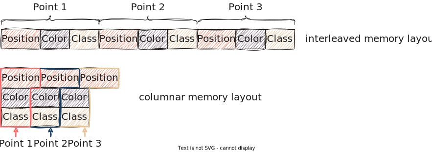

The buffer traits that pasture exposes
While pasture has only three primary built-in buffer types at the moment, it exposes a hierarchy of buffer traits that define the memory layout and ownership model that pasture is built around. In this section you will learn about all the different buffer traits and gain a deeper understanding of how pasture treats point cloud memory.
Memory layout vs. ownership
At its core, pasture distinguishes between two properties of a point buffer: Its memory layout and its memory ownership model. Each of these two properties comes in several 'flavors' which can (for the most part) be freely combined, resulting in a large number of potential buffer types. The following image shows the full buffer trait hierarchy in pasture:

For the memory ownership, pasture distinguishes between three types of ownership:
- A buffer immutably borrows its memory. This is the weakest guarantee and represented by the base trait
BorrowedBuffer<'a> - A buffer mutably borrows its memory. This is the next stronger guarantee and represented by the
BorrowedMutBuffer<'a>trait - A buffer owns its memory. This is the strongest guarantee and represented by the
OwningBuffer<'a>trait
Each stronger ownership guarantee implies all weaker guarantees, which is why OwningBuffer<'a> is a supertrait of BorrowedMutBuffer<'a>, which in turn is a supertrait of BorrowedBuffer<'a>. This also explains why OwningBuffer<'a> has a lifetime bound: BorrowedBuffer<'a> requires a lifetime bound to tell the borrow checker for which lifetime 'a the memory is borrowed, and this propagates to all supertraits.
For the memory layout, there are three options:
- An unspecified memory layout, which only allows accessing points and attributes by value (through copy operations). This is the memory layout guarantee that
BorrowedBuffer<'a>has - An interleaved memory layout, which allows accessing point data by reference/borrow. Mutable access requires a mutable ownership model, which is why
InterleavedBuffer<'a>is only a supertrait ofBorrowedBuffer<'a>and provides only immutable point access, whereasInterleavedBufferMut<'a>is a supertrait ofBorrowedMutBuffer<'a>and allows mutably borrowing points. - A columnar memory layout, which allows accessing attribute data by reference/borrow. Analogous to the interleaved layout traits,
ColumnarBuffer<'a>only allows immutable borrows and thus is a supertrait ofBorrowedBuffer<'a>, whereasColumnarBufferMut<'a>is a supertrait ofBorrowedMutBuffer<'a>and allows mutably borrowing attribute values.
Here are some examples of existing buffer types and which traits they implement:
VectorBufferowns its memory (since it uses aVec<u8>) and stores data in interleaved layout, so it implements:OwningBuffer<'a>(and thus alsoBorrowedMutBuffer<'a>andBorrowedBuffer<'a>)InterleavedBuffer<'a>andInterleavedBufferMut<'a>
HashMapBufferowns its memory (using aHashMapwithVec<u8>values) and stores data in a columnar layout, so it implements:OwningBuffer<'a>(and thus alsoBorrowedMutBuffer<'a>andBorrowedBuffer<'a>)ColumnarBuffer<'a>andColumnarBufferMut<'a>
ExternalMemoryBuffer<T>does not own its memory (the whole point of this buffer type!) and stores data in interleaved layout, so it implements:BorrowedBuffer<'a>BorrowedMutBuffer<'a>only if the memory region typeTis mutably borrowedInterleavedBuffer<'a>and—if the memory region typeTis mutably borrowed—InterleavedBufferMut<'a>
The root trait BorrowedBuffer<'a>
All point buffers in pasture implement the root trait BorrowedBuffer<'a>, so it makes sense to take a closer look at it. Here is the trait definition (without provided methods):
pub trait BorrowedBuffer<'a> { // Required methods fn len(&self) -> usize; fn point_layout(&self) -> &PointLayout; fn get_point(&self, index: usize, data: &mut [u8]); fn get_point_range(&self, range: Range<usize>, data: &mut [u8]); unsafe fn get_attribute_unchecked( &self, attribute_member: &PointAttributeMember, index: usize, data: &mut [u8] ); }
The first two methods it defines are not strictly related to memory ownership or layout and instead are fundamental properties of all point buffers: Each buffer as a PointLayout and stores some number of points. These can be accessed through fn point_layout(&self) -> &PointLayout and fn len(&self) -> usize respectively.
The next three methods are the most fundamental accessor methods for point and attribute data in a point buffer. As a user, you will rarely interact with these methods directly as they work exclusively with untyped memory (in the form of byte slices [u8]). Let's first look at accessing point data:
fn get_point(&self, index: usize, data: &mut [u8]); fn get_point_range(&self, range: Range<usize>, data: &mut [u8]);
These functions copy the data for a single point (get_point) or a range of consecutive points (get_point_range) into a user-defined byte buffer. Since we are still in untyped land, the signature is fn get_point(&self, index: usize, data: &mut [u8]) and not fn get_point<T: PointType>(&self, index: usize) -> T.
The signature fn get_point<T: PointType>(&self, index: usize) -> T would make the BorrowedBuffer<'a> trait object-unsafe, so we could never create trait objects from it. This would be an unnecessary limitation. Instead, this is what the views do: PointView::at has exactly this signature, except that the type T is part of the PointView type.
Working with untyped memory might seem terribly unsafe, but pasture hides a lot of the unsafety. The only requirement for calling get_point or get_point_range is that the memory buffer passed into these functions has to be large enough to store the requested point data. In that regard it is similar to calling Read::read, a common function in Rust.
A more complex function is the accessor for attribute data:
unsafe fn get_attribute_unchecked( &self, attribute_member: &PointAttributeMember, index: usize, data: &mut [u8] );
This is an unsafe function because it is an optimized accessor that bypasses checks (hence the unchecked suffix, a common pattern in Rust). It is the faster but more unsafe variant of get_attribute. It copies the data for a specific point attribute of the point at index into the user-provided buffer. Accessing this data might require knowledge of the offset of the point attribute within the PointLayout, which is why get_attribute_unchecked requires a PointAttributeMember instead of the more general PointAttributeDefinition.
A neat thing is that both get_attribute and get_attribute_range (for getting attribute values for multiple consecutive points) can be implemented using get_attribute, so implementors of BorrowedBuffer<'a> only need to provide one method instead of two.
Notice that every buffer access method of BorrowedBuffer<'a> requires copying the point/attribute data! This is precisely what it means to have an unspecified memory layout: No guarantee can be made that it is possible to access points or attributes through references, so we have to resort to copying! Examples of buffer types that cannot make guarantees about their memory layout would be buffers sorting data in disjoint memory regions (e.g. using a linked list) or buffers generating data on the fly.
Based on these three accessor functions, a bunch of provided functions are implemented:
fn get_attribute( &self, attribute: &PointAttributeDefinition, index: usize, data: &mut [u8] ) { ... } fn get_attribute_range( &self, attribute: &PointAttributeDefinition, point_range: Range<usize>, data: &mut [u8] ) { ... } fn view<'b, T: PointType>(&'b self) -> PointView<'a, 'b, Self, T> where Self: Sized, 'a: 'b { ... } fn view_attribute<'b, T: PrimitiveType>( &'b self, attribute: &PointAttributeDefinition ) -> AttributeView<'a, 'b, Self, T> where Self: Sized, 'a: 'b { ... } fn view_attribute_with_conversion<'b, T: PrimitiveType>( &'b self, attribute: &PointAttributeDefinition ) -> Result<AttributeViewConverting<'a, 'b, Self, T>> where Self: Sized, 'a: 'b { ... }
We already saw get_attribute and get_attribute_range, and in previous examples also view and view_attribute. The latter return the PointView and AttributeView types, which internally use the raw data accessor functions to convert untyped memory into typed values. There is one special view type that we haven't talked about: AttributeViewConverting.
Converting attributes
The view_attribute function is very strict: It requires that the PointAttributeDefinition passed in exactly matches the definition in the PointLayout of the buffer. This means that both the name and the datatype must match! pasture checks this at runtime and panics if this invariant is not met! Here is an example why this can be problematic:
#[derive(PointType, Clone, Copy, bytemuck::NoUninit, bytemuck::AnyBitPattern)] #[repr(C, packed)] struct CustomPointType { #[pasture(BUILTIN_INTENSITY)] pub intensity: u16, #[pasture(BUILTIN_POSITION_3D)] pub position: Vector3<f32>, #[pasture(attribute = "CUSTOM_ATTRIBUTE")] pub custom_attribute: f32, }
The CustomPointType type (from the point layout section) stores a POSITION_3D attribute, but with a different datatype than the default one (Vector3<f32> instead of Vector3<f64>). Calling view_attribute::<Vector3<f64>>(&POSITION_3D) on a buffer with the CustomPointType layout will panic! Calling view_attribute::<Vector3<f32>>(&POSITION_3D) (f32 instead of f64) will panic as well!
This may seem annoying, but is due to safety reasons! The resulting view type performs raw memory transmutations, which are amongst the most unsafe things that you can do in Rust. So pasture has to make absolutely sure that these transmutations are valid, which they only are if we view the untyped memory in the exact types specified in the buffer's PointLayout!
There is a way to deal with this problem: We could convert from Vector3<f64> to Vector3<f32>, accepting a loss of precision. In fact, there are a bunch of possible conversions, essentially everything that the as operator allows, which we can lift to the nalgebra vector types. If we want such a conversion, pasture still has to do an initial memory transmutation to the actual type of the attribute, but then it can apply an as transformation. This is precisely what view_attribute_with_conversion does: It returns a view over attribute values in the strong type T: PrimitiveType, even if T is different from the datatype of the attribute within the buffer. Not all conversions are valid, for example vector-to-scalar conversions, which is why this function returns a Result. Since the resulting attribute view performs conversions, it only ever supports accessing attribute data by value.
Mutable access to buffer data using BorrowedMutBuffer<'a>
Let's look at the BorrowedMutBuffer<'a> type and the additional methods it provides. First, here are the required methods:
pub trait BorrowedMutBuffer<'a>: BorrowedBuffer<'a> { // Required methods unsafe fn set_point(&mut self, index: usize, point_data: &[u8]); unsafe fn set_point_range( &mut self, point_range: Range<usize>, point_data: &[u8] ); unsafe fn set_attribute( &mut self, attribute: &PointAttributeDefinition, index: usize, attribute_data: &[u8] ); unsafe fn set_attribute_range( &mut self, attribute: &PointAttributeDefinition, point_range: Range<usize>, attribute_data: &[u8] ); fn swap(&mut self, from_index: usize, to_index: usize); }
Where previously we had a bunch of get-accessors, here we see set-methods for points and attributes as well as ranges thereof. There is also swap for swapping the point data at to indices (very helpful for implementing sorting).
The get and set functions on the basic buffer traits come in two flavors: Accessing individual pieces of data (e.g. set_point, set_attribute) and accessing ranges of data (e.g. set_point_range, set_attribute_range). If you have to access consecutive points or attributes, prefer to use the range accessors instead of multiple calls to the individual accessors!
Notice that all four set-methods are unsafe! They have to be, because pasture has no way of checking whether the data passed into these functions actually corresponds to the memory layout of the buffer! For this reason, you have to be very careful when calling these functions directly. Again, a lot of the unsafety is hidden by using point and attribute views.
Similar to BorrowedBuffer<'a>, a bunch of helper functions are provided:
#![allow(unused)] fn main() { fn transform_attribute<'b, T: PrimitiveType, F: Fn(usize, T) -> T>( &'b mut self, attribute: &PointAttributeDefinition, func: F ) where Self: Sized, 'a: 'b { ... } fn view_mut<'b, T: PointType>(&'b mut self) -> PointViewMut<'a, 'b, Self, T> where Self: Sized, 'a: 'b { ... } fn view_attribute_mut<'b, T: PrimitiveType>( &'b mut self, attribute: &PointAttributeDefinition ) -> AttributeViewMut<'a, 'b, Self, T> where Self: Sized, 'a: 'b { ... } }
We have mutable view accessors (view_mut and view_attribute_mut) as well as one special function transform_attribute. This special function allows in-place manipulation of all values of a specific attribute. It is a more efficient version of the following code:
#![allow(unused)] fn main() { let mut buffer = ...; let mut view = buffer.view_attribute_mut::<u16>(&INTENSITY); for index in 0..buffer.len() { let mut intensity = view.at(index); intensity *= 2; // Apply some transformation to the intensity value view.set_at(index, intensity); } }
This at/set_at pattern is necessary because BorrowedMutBuffer<'a> does not know anything about the memory layout of its implementor, so it only provides data access by value. To mutate a value, we have to copy it out of the buffer (using at) and then write the mutated value back into the buffer (using set_at). The same can be achieved using transform_attribute:
#![allow(unused)] fn main() { let mut buffer = ...; buffer.transform_attribute(&INTENSITY, |_index: usize, intensity: u16| -> u16 { intensity * 2 }); }
Resizing buffers using the OwningBuffer<'a> trait
The last memory ownership trait is OwningBuffer<'a>. A buffer that implements this trait is the owner of its memory, which means that we can resize this buffer. Let's look at the required methods:
#![allow(unused)] fn main() { pub trait OwningBuffer<'a>: BorrowedMutBuffer<'a> + Sized { // Required methods unsafe fn push_points(&mut self, point_bytes: &[u8]); fn resize(&mut self, count: usize); fn clear(&mut self); fn append_interleaved<'b, B: InterleavedBuffer<'b>>(&mut self, other: &B); fn append_columnar<'b, B: ColumnarBuffer<'b>>(&mut self, other: &B); } }
It provides three general resizing functions that are similar to those that Vec provides: push_points, resize, and clear.
push_points is the resizing variant of set_point_range from the BorrowedMutBuffer<'a> trait: It appends the provided points to the end of the buffer. It is unsafe because it can't check whether the memory passed to it conforms to the PointLayout of the buffer.
resize and clear follow the same logic as their identically-named counterparts in Vec: resize resizes the buffer so that it contains the given number of points, default-constructing new points as needed. This works since all point types in pasture are zero-initializable. clear clears the contents of the buffer so that its new length is 0.
There are two append_... functions, which take a buffer in a specified memory layout (interleaved or columnar) and appends the points from this buffer to the current buffer. The distinction regarding the memory layout can enable faster copy operations, as appending to a buffer with the same memory layout will be more efficient as appending to a buffer with a different memory layout. There is also a provided function append, which does not make assumptions regarding the memory layout of the buffer that shall be appended. It is easier to use but generally will have worse performance.
The memory layout traits
The memory ownership traits made no assumptions about the memory layout of a point buffer. pasture does however support two specific memory layouts natively: Interleaved and columnar. We already saw the two default buffer types corresponding to these layouts in the section on built-in buffer types: VectorBuffer is the default interleaved buffer, and HashMapBuffer the default columnar buffer. Both memory layouts have their own traits, which we will look at in the remainder of this section. As a recap, here is a picture showing the difference between interleaved and columnar memory layout:

Interleaved buffers and the InterleavedBuffer<'a> trait
All interleaved buffers in pasture implement the InterleavedBuffer<'a> trait. Here is how it looks like:
#![allow(unused)] fn main() { pub trait InterleavedBuffer<'a>: BorrowedBuffer<'a> { // Required methods fn get_point_ref<'b>(&'b self, index: usize) -> &'b [u8] where 'a: 'b; fn get_point_range_ref<'b>(&'b self, range: Range<usize>) -> &'b [u8] where 'a: 'b; } }
It is a supertrait of the basic buffer trait BorrowedBuffer<'a> and adds two new accessor methods: get_point_ref and get_point_range_ref. They provide by-reference access to individual points and ranges of points, which is precisely what 'interleaved memory layout' means. These functions return raw byte slices (i.e. the raw memory of the points) but they are what enables the at_ref and iter functions of point views!
InterleavedBuffer<'a> allows borrowing data from a buffer, which itself might borrow its memory. For this reason, get_point_ref and get_point_range_ref have more complex lifetime bounds: They borrow data for some lifetime 'b, which is at most as long as lifetime 'a. This is expressed through where 'a: 'b, which can be read as "'a must life at least as long as 'b". This allows borrowing point data for short lifetimes than 'a, which can sometimes be necessary.
There is also one provided helper method on the InterleavedBuffer<'a> trait:
#![allow(unused)] fn main() { fn view_raw_attribute<'b>( &'b self, attribute: &PointAttributeMember ) -> RawAttributeView<'b> where 'a: 'b { ... } }
It returns a more efficient accessor for the values of a specific attribute compared to calling get_attribute multiple times.
For buffers that provide mutable access to their memory, there is a mutable variant of InterleavedBuffer<'a>, called InterleavedBufferMut<'a>. It looks similar to InterleavedBuffer<'a>, except that all methods return mutable borrows:
#![allow(unused)] fn main() { pub trait InterleavedBufferMut<'a>: InterleavedBuffer<'a> + BorrowedMutBuffer<'a> { // Required methods fn get_point_mut<'b>(&'b mut self, index: usize) -> &'b mut [u8] where 'a: 'b; fn get_point_range_mut<'b>( &'b mut self, range: Range<usize> ) -> &'b mut [u8] where 'a: 'b; // Provided method fn view_raw_attribute_mut<'b>( &'b mut self, attribute: &PointAttributeMember ) -> RawAttributeViewMut<'b> where 'a: 'b { ... } } }
Notice that it is a supertrait of both InterleavedBuffer<'a> and BorrowedMutBuffer<'a>: It requires both an interleaved memory layout and mutably borrowed buffer memory!
Columnar buffers and the ColumnarBuffer<'a> trait
For columnar memory layouts, there is the ColumnarBuffer<'a> trait. Here are its required methods:
#![allow(unused)] fn main() { pub trait ColumnarBuffer<'a>: BorrowedBuffer<'a> { // Required methods fn get_attribute_ref<'b>( &'b self, attribute: &PointAttributeDefinition, index: usize ) -> &'b [u8] where 'a: 'b; fn get_attribute_range_ref<'b>( &'b self, attribute: &PointAttributeDefinition, range: Range<usize> ) -> &'b [u8] where 'a: 'b; } }
Where interleaved buffers provide by-reference access to whole points, columnar buffers allow borrowing the memory of individual attributes and ranges thereof using the two methods get_attribute_ref and get_attribute_range_ref. There are few surprises here, they work the same way the point-accessors on InterleavedBuffer<'a> do. There is also a raw attribute range accessor identical to InterleavedBuffer<'a>:
#![allow(unused)] fn main() { fn view_raw_attribute<'b>( &'b self, attribute: &PointAttributeMember ) -> RawAttributeView<'b> where 'a: 'b { ... } }
For buffers that provide mutable access to their memory, there is also a mutable variant of ColumnarBuffer<'a>, called ColumnarBufferMut<'a>, which looks like this:
#![allow(unused)] fn main() { pub trait ColumnarBufferMut<'a>: ColumnarBuffer<'a> + BorrowedMutBuffer<'a> { // Required methods fn get_attribute_mut<'b>( &'b mut self, attribute: &PointAttributeDefinition, index: usize ) -> &'b mut [u8] where 'a: 'b; fn get_attribute_range_mut<'b>( &'b mut self, attribute: &PointAttributeDefinition, range: Range<usize> ) -> &'b mut [u8] where 'a: 'b; // Provided method fn view_raw_attribute_mut<'b>( &'b mut self, attribute: &PointAttributeMember ) -> RawAttributeViewMut<'b> where 'a: 'b { ... } } }
It is to ColumnarBuffer<'a> as InterleavedBufferMut<'a> is to InterleavedBuffer<'a>: It contains the same set of methods as ColumnarBuffer<'a>, except they all provide mutable access to the attribute data.
The implications for point and attribute views
Using all these buffer traits, pasture auto-detects the capabilities of the point and attribute views that you obtain by calling view and view_attribute (and their mutable variants) on a buffer. The returned view type is a generic type with conditional implementations based on the memory layout and ownership of the underlying buffer. Here is an example showing the PointView type. Its basic implementation looks like this:
#![allow(unused)] fn main() { pub struct PointView<'a, 'b, B: BorrowedBuffer<'a>, T: PointType> where 'a: 'b, { /* private fields */ } }
It wraps around a generic buffer type B, which has to at least implement the basic buffer trait BorrowedBuffer<'a>. Based on this trait, the point view can only provide by-value access to the point data:
#![allow(unused)] fn main() { impl<'a, 'b, B: BorrowedBuffer<'a>, T: PointType> PointView<'a, 'b, B, T> where 'a: 'b { pub fn at(&self, index: usize) -> T { ... } } }
If we want by-reference access to points, the underlying buffer must have interleaved memory layout:
#![allow(unused)] fn main() { impl<'a, 'b, B: InterleavedBuffer<'a>, T: PointType> PointView<'a, 'b, B, T> where 'a: 'b { pub fn at_ref<'c>(&'c self, index: usize) -> &'c T where 'b: 'c { ... } } }
The other accessors are implemented conditionally in a similar way. Not only does this reduce code duplication, it also allows you to explicitly specify which type of point cloud data access you want in your generic code:
fn process_data_by_ref<'a, 'b, B: InterleavedBuffer<'a>>(point_view: PointView<'a, 'b, B, PointType>) {
// Requires by-reference access to points of type `PointType`!
}
The at_ref function of PointView has three distinct lifetimes! This is necessary because there can be up to three distinct lifetimes when calling at_ref:
- The lifetime for which we borrow the individual point (
'c) - The lifetime for which the
PointViewis valid ('b) - The lifetime for which the underlying buffer borrows its memory (
'a)